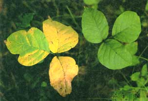
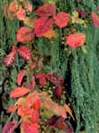
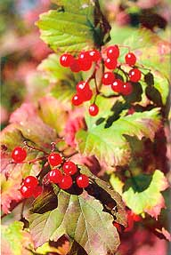

When "leafletsof three"won'tletyou be.
Still, it feels good to have that work done; with the area grubbed out you can start planning tomorrow. Now for a nice cold drink and maybe a little nap.
You walk into the garage, toss your work gloves onto a bench and dust your shin and pants off a bit before going upstairs. On your way to the refrigerator you stop off in the bathroom - nature calls. A few minutes later, frosty mug in hand, you settle back in an easy chair. Ahhhh. A half-hour later, you're asleep.
Poor, miserable devil.
You don't know it yet, but you've just joined at least 2 million other Americans who, this summer, will become all too well acquainted with the power of poison ivy or one of its near relatives - poison oak and poison sumac. Sometime within the next six to 96 hours, you're likely to find yourself agonized by an itching, watering rash on your back, neck, face, arms, legs and - um, elsewhere. If you're lucky, the rash will heal after a week or two - or maybe three.
Having read the preceding scenario, you might be thinking, "Nah, that's not me. I know what poison ivy looks like. I wouldn't go pulling up handfuls of the stuff." Or maybe you're one of those who are still saying, "Nah, that's not me; I'm immune. I can wade through the stuff."
Don't be so sure on either count. Please.
When it comes to "knowing" what the plants look like, it's wise to remember that poison ivy is not only the mosquito of the plant world but also the chameleon. Not even the botanist can agree on how many kinds of poison ivies and oaks there are - or even, in some cases, which plant is which. Few life forms (others than perhaps Homo sapiens) are as variable in appearance. Depending on the individual plant, common poison ivy is a vine, a shrub or a tree-like bush - or sometimes, some of each. It creeps, it stands erect, it climbs. Its leaves are sometimes green, sometimes yellow or red, sometimes lance-shaped, sometimes oval, sometimes toothed, sometimes smooth-edged, sometimes shiny, sometimes dull, sometimes spotted.
To make matters worse, the plant tends to grow in the same places as - and intermingles with - harmless but similar-looking species such as Virginia creeper, hog peanut and box elder. It hides in other ways, too. Below ground, ordinary-looking (but rash-instigating) roots extend well beyond the plant, waiting to be exposed and pulled up by an unsuspecting gardener or landscaper. And in late fall and winter, a few scraggly bare branches or a hairy climbing vine may be all that shows. So much for the old adage, "Leaflets three, let it be."
As for those of you who are convinced you're immune, the odds are stacked heavily against you. Only about 3% of humans are truly "immune" to these plants for life; the rest will eventually develop some degree of sensitivity. And the older you get, the more likely you are to find yourself suddenly susceptible - just the opposite of the oft heard belief that if you haven't broken out from poison ivy or oak by the time you're an adult, you probably never will.
Poison oak, poison ivy and poison sumac all belong to Anacardiaceae, a large group of about 600 trees and shrubs that belong to the cashew family and are found worldwide, mostly in the tropics. Several are known for their ability to irritate human skin.
In this country Anacardiaceae are limited to only about 13 species, nearly all of which - including poison ivy and oak - are classified as sumacs. For years, sumacs were placed in the genus Rhus, but recently botanists have put the poisonous varieties in a separate genus, Toxicodendron. The debate continues over how many distinct species and varieties exist, but there is general agreement that the four most widespread are poison ivy (T. radicans), Western poison oak (T. diversilobum), Eastern poison oak ( T. toxicarium, sometimes dubbed T. quercifolium) and poison sumac ( T. vernix ).
Some people call eastern poison oak "oak leaf poison ivy," and others use the terms poison ivy and poison oak pretty much interchangeably. No matter. Call them what you will, the important thing here is that all toxicodendrons produce urushiol (pronounced oo-ROO-shee-ohl), a combination of skin-irritating chemicals found in the plants' sticky sap.
Urushiol varies slightly in composition from species to species (poison sumac's is considered the most potent), but its work is consistent. Within ten to 15 minutes after you get the substance on you, it's carried into the dermis (the inner skin layer) and bonds with skin protein to form an antigen. The first time this occurs, nothing obvious happens - no one is "born sensitive" to urushiol. But your body may begin to build defenses against the antigen, and each subsequent exposure may prompt a further buildup.
Depending on your genetic heritage (and, to some extent, on the frequency with which you're exposed), the defense-building process can be rapid or can take years. But sooner or later, most people's immune system develops some degree of distinct biological distaste for the urushiol-spawned antigen. At that point, whenever the antigen's presence is detected - in other words, almost any time you get urushiol on you - enraged white corpuscles known as T-cells rush to the hated invader and attack, releasing chemicals that literally destroy the surrounding skin. The resulting reddened, itching, blistered battleground is better known as poison ivy (or oak, or sumac) dermatitis.
Technically speaking, those who say they're "immune" actually don't get a rash because in fact they aren't immune. Those of us whose bodies have decided to stand and fight the dreaded alien from outer-skin space are immune, and have only our own overaggressive T-cells to thank for small favors.
Obviously, the best way to deal with the urushiol is to avoid it altogether, and the best way to do that is to learn how to spot poison ivy, oak and sumac and to stay away from them.
Unfortunately, these plants are too easy to overlook and too widespread to expect to avoid forever if you hike, camp, garden or otherwise spend time outdoors. Poison ivy grows almost coast to coast and border to border; western poison oak is California's most common shrub. And poison sumac, although somewhat more distinctive, has a tendency to pop up in unexpected places. Unless you live in Nevada - the only state in the contiguous U.S. that's entirely free of Toxicodendron species - you and urushiol are likely to cross paths sometime.
At least you can dress for the occasion. Wearing protective clothing when you're in likely toxic-plant habitat can help minimize exposure - but be forewarned that it won't prevent contact entirely. Given a chance, urushiol in sufficient quantities can pass through virtually anything you wear, including leather and even rubber gloves. Lightweight clothes offer little protection; get urushiol on your hands, rub your hands on your jeans or T-shirt, and the irritant will penetrate your skin.
Over the years, many people (including the late Euell Gibbons) have touted the notion that you can "desensitize" your body to urushiol by eating bits of young poison ivy or oak leaves each spring, thus building up an "immunity." This approach may work for some - notably, those who naturally aren't affected by the antigen, anyway - but for most the procedure is dangerous and fraught with side effects, not the least of which can be rashes at both ends of the digestive system. People whose work takes them into toxic-plant territory - foresters and utility workers, for instance - are sometimes given a series of injections or pills in minuscule doses over several months to build a resistance. Results have been inconsistent, however, and the practice has sometimes provoked serious reactions.
It doesn't take urushiol much time to bond with flesh proteins, so if you know or suspect you've gotten into poison ivy, the first thing to do is to flush the exposed areas with cold water for several minutes. Cold water not only closes the pores to prevent further penetration of the irritant, but also combines chemically with the urushiol, converting it to a relatively harmless substance.
The second thing to do is to remove any remaining urushiol before it has a chance to spread to other parts of your body. Washing exposed areas with mild soap can help. Better yet, flush the areas with liberal quantities of a gentle solvent such as rubbing alcohol or vinegar (don't just dab it on or you'll merely smear the urushiol around), then wash with soap and water. Don't use strong solvents such as kerosene, turpentine, nail polish remover or the like, because they remove natural protective skin oils, making it easier for the irritant to bond to your flesh. Likewise for strong laundry soap. And speaking of laundry, be sure to toss our clothes into the washing machine after you've been walking or working in possible poison-plant territory. Wash them separately from other clothing, and if you believe the garments are heavily contaminated wash them a couple of times just to be safe.
Often though, you can find a good poison-ivy neutralizer within reach of the plants themselves: Jewelweed (also known as touch-me-not) is common in the eastern U.S. and has long been used to ward off rashes. If you find that you've gotten into poison ivy, grab a handful of jewelweed leaves, flowers or stems, crush them, and rub them on your skin to release the juice.
There are probably as many home remedies for treating poison ivy/oak/sumac rashes as there are for the common cold - more, maybe. Among them are such unlikely (if not outright disgusting) topical medications as gunpowder, shoe polish, toothpaste, crawfish flesh and horse urine (desperation can drive a person to try anything, I suppose).
For mild cases of poison ivy, applying moist compresses or soaking in cold water may be enough to ease the itching. Aloe Vera gel, which can be squeezed from the plant of the same name or purchased in health food stores and drugstores, soothes and seems to promote healing. So do various herbal teas (not consumed, mind you, but applied to the rash). Jewelweed, plantain, oak bark (or leaves of acorns), rhubarb leaves, ragweed, dock, gum plant (grindelia), garlic and goldenseal are among the more common and more highly praised rash-healing herbs. To make a tea, just pour a quart or two of boiling water over about a handful of any one of the aforementioned plants, let it steep, then cool and strain the liquid and dab it on your rash as needed. (Never use such teas, however, on open sores; because they're nonsterile, they could cause an infection.) If you have an all-over rash, make a more concentrated tea and add some to your bath.
Another popular bath-added medicant is oatmeal; you can buy a commercial oatmeal preparation (Aveeno), or make your own by wrapping about a half cup of uncooked rolled oats in a piece of cloth and letting the cereal soak in the bath water. Squeeze the bundle from time to time - or simply use it as your washcloth - to release a solution that will help dry up the blisters.
For some (including myself), bathing or showering in very hot water produces relief by "bringing out" the itch. Under the hot water, the rash itches intensely - to the point that it can only be called perverse pleasure - but afterward you can be Ritchie for up to several hours. (It is not true, incidentally, that hot water can spread a rash. It is also not true that the fluid in the blisters can spread or cause a rash; clinicians have found no evidence of urushiol or other irritants in the blister fluid.)
A few final words of warning: If your rash becomes severe or shows any sign of complications, or if you experience unusual swelling, dizziness, breathing difficulty or other symptoms of illness after being exposed to poison ivy, see a doctor. Infection is a real danger in serious cases of contact dermatitis, and systemic toxicodendron poisoning from exposure to poison ivy, oak and sumac, though rare, does occur and can lead to kidney failure. Never try to "tough out" a bad case.
Related information:
The Toxic Four
|
 Above : The common ""3-leaf"" version of a poison ivy plant; Below left: poison oak when the leaves change. |
|
 |
|
 |
|
|